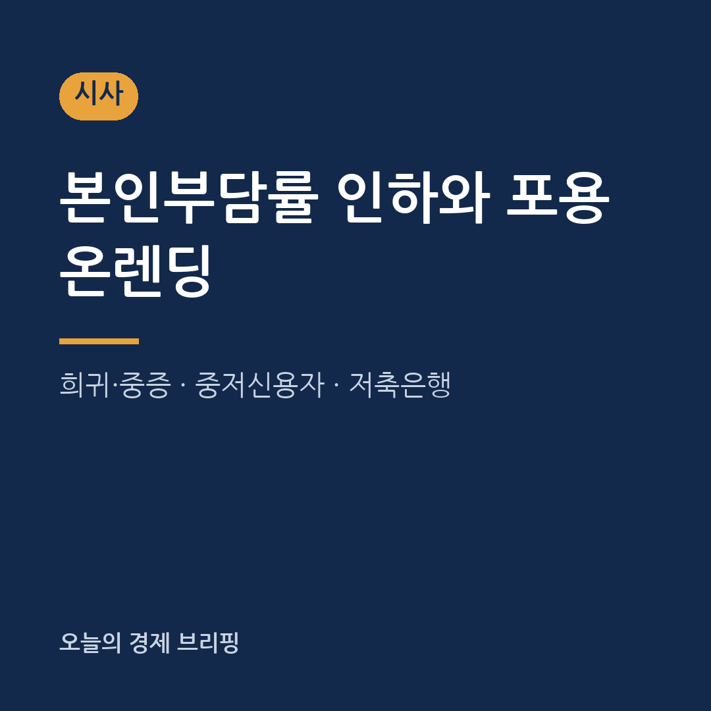
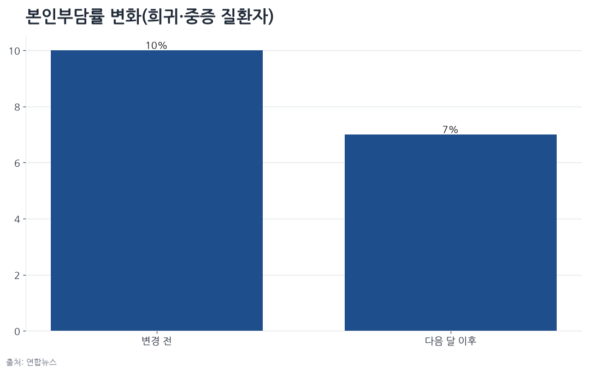

2026-11-26-1139-tistory 발행 키트 · 이 페이지는 검색에 노출되지 않습니다.
제목
카테고리
시사태그
본문 (그림·표 포함)
휴대폰 블로그 앱에서는 그림이 같이 붙지 않을 수 있어요. 그때는 [글자만 복사] 후 아래 이미지를 저장해 [그래프1]·[표1] 자리에 첨부하세요.
핵심 결론부터 정리합니다. 다음 달부터 희귀·중증 질환자의 건강보험 본인부담률이 10%에서 7%로 낮아지며, 금융위원회는 중저신용자 대출 금리를 낮추는 '포용 온렌딩'을 내년 1분기에 출시할 계획입니다. 한편 포용금융 확대의 부작용으로 신용점수 최상위 구간의 금리 역전도 보도되었습니다.

▶ 배경: 의료비와 금융비용, 두 가지 생활 부담
연말을 앞두고 정부가 취약계층의 의료비와 대출 부담을 함께 다루는 모양새입니다. 두 소식 모두 26일 알려졌으며, 시행 시점은 각각 다음 달과 내년 1분기로 다릅니다.
▶ 핵심 1: 희귀·중증 질환자 본인부담률 인하
이재명 대통령은 26일 다음 달부터 희귀·중증 질환자의 건강보험 본인부담률이 10%에서 7%로 내려간다고 밝혔습니다. 본인부담률은 진료비 가운데 환자가 직접 부담하는 비율입니다.

3%포인트 하락이므로 장기 치료 환자의 창구 부담이 줄어드는 방향입니다. 다만 적용 대상 질환의 범위와 세부 적용 방식은 현재 확인된 자료에 포함되어 있지 않습니다.
▶ 핵심 2: 포용 온렌딩 구상
금융위원회는 제8차 포용적금융 대전환회의에서 중저신용자를 위한 포용 온렌딩을 내년 1분기에 선보이겠다고 했습니다. 온렌딩은 은행이 조달한 자금을 다른 금융사를 통해 대출로 연결하는 방식입니다.
은행의 낮은 조달금리 자금이 저축은행 대출로 이어져, 중저신용자의 금리를 3~5%포인트 낮추는 것이 목표로 보도되었습니다. 금융사의 포용금융 확대를 돕기 위한 건전성 규제 완화도 함께 추진됩니다. 대상 기준과 공급 규모는 확인되지 않았습니다.
▶ 영향: 신용점수 역전과 금리상한제
포용금융 확대는 부작용 논란도 낳고 있습니다. 우리은행과 하나은행에서 951점 이상 차주가 바로 아래 점수대보다 높은 금리를 적용받는 사례가 나왔고, 5대 은행 기준으로 2년 2개월 만의 역전이라고 합니다. 신용점수 체계에 대한 신뢰가 약해질 수 있다는 지적이 따릅니다.
취약차주에게 금리상한제를 적용한 은행들의 이자 감면액은 50억 원 안팎에 이릅니다. 한국은행이 이날 기준금리를 연 3.00%에서 3.25%로 올리면서 상한 조정 여부를 두고 은행들의 고민이 이어지고 있습니다.
▶ 확인할 점
제도별 확인 사항
| 제도·현상 | 핵심 | 시기 | 확인할 곳 |
|---|---|---|---|
| 본인부담률 인하 | 희귀·중증 질환자 10%에서 7% | 다음 달부터 | 진료받는 병원, 정부 공식 안내 |
| 포용 온렌딩 | 은행 자금을 저축은행 대출로 연결, 금리 3~5%포인트 인하 목표 | 내년 1분기 | 금융위원회 보도자료 |
| 신용점수 역전 | 우리·하나은행 951점 이상 차주 금리가 아래 점수대보다 높음 | 5대 은행 기준 2년 2개월 만 | 각 은행 금리 안내 |
| 금리상한제 | 취약차주 이자 감면액 50억 원 육박 | 기준금리 3.25% 인상 이후 조정 검토 | 각 은행 공지 |
출처: 연합뉴스, 매일경제
▶ 정리
1. 희귀·중증 질환자의 본인부담률은 다음 달부터 10%에서 7%로 낮아집니다.
2. 포용 온렌딩은 내년 1분기 출시 예정이며, 중저신용자 금리를 3~5%포인트 낮추는 것이 목표입니다.
3. 최상위 신용점수 구간의 금리 역전은 포용금융 확대가 남긴 과제로 거론됩니다.
출처 (본문 맨 아래에 붙여넣기 권장)
- 연합뉴스, 李대통령 "희귀·중증환자 보험료 부담 낮춰…희망 키우겠다", https://www.yna.co.kr/view/AKR20261126086100001 - 매일경제, 은행 돈으로 저축銀 대출…중저신용자 금리 3~5%P 낮춘다, https://www.mk.co.kr/news/economy/12219202 - 매일경제, “신용점수 열심히 높일 필요 있나요”…최고점수 차주가 이자 더 낸다, https://www.mk.co.kr/news/economy/12219193 - 매일경제, 치솟는 금리에 금리상한 내건 은행들…이자 감면액 50억 육박, https://www.mk.co.kr/news/economy/12219091 - 매일경제, 금통위원 2명은 금리 인상 반대…긴축 ‘속도’ 문구 삭제, https://www.mk.co.kr/news/economy/12219117